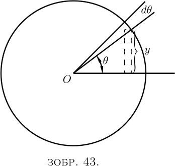
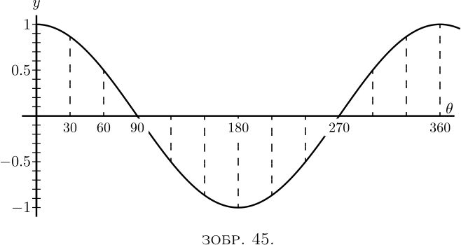

Оскільки зазвичай грецькі літери використовуються для позначення кутів, ми, як і зазвичай, візьмемо букву $\theta$ («тета») для будь-якого змінного кута.
Розглянемо функцію \[ y= \sin \theta. \]

Нам потрібно дослідити значення $\dfrac{d(\sin \theta)}{d \theta}$, тобто, іншими словами, якщо кут $\theta$ змінюється, ми повинні знайти співвідношення між приростом синуса та приростом кута, коли обидва прирости самі по собі нескінченно малі. Подивіться на Зображення 43, де, якщо радіус кола дорівнює одиниці, висота $y$ є синусом, а $\theta$ є кутом. Тепер, якщо $\theta$ збільшиться шляхом додавання до нього малого кута $d \theta$ – частки кута, – висота $y$, синуса, буде збільшена на маленьку частку $dy$. Нова висота $y + dy$ буде синусом нового кута $\theta + d \theta$, або, формулюючи це у вигляді рівняння, \[ y+dy = \sin(\theta + d \theta); \] і віднімання з цього першого рівняння дає \[ dy = \sin(\theta + d \theta)- \sin \theta. \]
Величина в правій частині - це різниця між двома синусами, і книги з тригонометрії розкажуть, як це розрахувати. Там написано, що коли $M$ і $N$ — два різні кути, \[ \sin M - \sin N = 2 \cos\frac{M+N}{2}·\sin\frac{M-N}{2}. \]
Тоді, якщо ми підставимо $M= \theta + d \theta$ для одного кута, а $N= \theta$ для іншого, ми можемо написати \begin{align*} dy &= 2 \cos\frac{\theta + d\theta + \theta}{2} · \sin\frac{\theta + d\theta - \theta}{2},\\ \text{або,}\; dy &= 2\cos(\theta + \tfrac{1}{2}d\theta) · \sin\tfrac{1}{2} d\theta. \end{align*}
Але якщо ми вважаємо $d \theta$ необмежено малим, ми можемо знехтувати $\frac{1}{2} d \theta$ порівняно з $\theta$, а також можемо прийняти $\sin\frac{1}{2} d \theta$ рівним $\frac{1}{2} d \theta$. Тоді рівняння набуває вигляду: \begin{align*} dy &= 2 \cos \theta × \tfrac{1}{2} d \theta; \\ dy &= \cos \theta · d \theta, \\ \text{ і, нарешті,}\; \dfrac{dy}{d \theta} &= \cos \theta. \end{align*}
Супутні криві, Зоб. 44 і Зоб. 45, показують в масштабі значення $y=\sin \theta$ і $\dfrac{dy}{d\theta}=\cos\theta$ для відповідних значень $\theta$.

Нехай $y=\cos \theta$.
Але $\cos \theta=\sin\left(\dfrac{\pi}{2}-\theta\right)$.
Тому \begin{align*} &\begin{aligned} dy = d\left(\sin\left(\frac{\pi}{2} - \theta\right)\right) &= \cos\left(\frac{\pi}{2} - \theta\right) × d(-\theta) \\ &= \cos\left(\frac{\pi}{2} - \theta\right) × (-d \theta), \end{aligned} \\ &\frac{dy}{d\theta} = -\cos\left(\frac{\pi}{2} - \theta\right). \end{align*} І з цього випливає, що \begin{align*} &\frac{dy}{d\theta} = -\sin \theta. \end{align*}
Нарешті, візьмемо тангенс. Нехай \begin{align*} y &= \tan \theta, \\ dy &= \tan(\theta + d\theta) - \tan\theta. \\ \end{align*} Розгортання, як показано в книгах з тригонометрії, \begin{align*} \tan(\theta + d\theta) &= \frac{\tan\theta + \tan d\theta} { 1 - \tan\theta·\tan d\theta}; \\ \text{звідки}\; dy &= \frac{\tan\theta + \tan d\theta} {1-\tan\theta·\tan d\theta} - \tan\theta \\ &= \frac{(1 + \tan^2 \theta)\tan d\theta} {1-\tan\theta·\tan d\theta}. \end{align*}
Тепер згадаємо, що якщо $d\theta$ нескінченно малий, значення $\tan d\theta$ стає ідентичним $d\theta$, а $\tan\theta · d\theta$ є зневажливо малим порівняно з $1$, так що вираз зводиться до \begin{align*} dy &= \frac{(1+\tan^2 \theta)\, d\theta}{1}, \\ \text{так що}\; \frac{dy}{d\theta} &= 1 + \tan^2\theta, \\ \text{або}\; \frac{dy}{d\theta} &= \sec^2 \theta. \end{align*}
Підсумувавши ці результати, ми маємо:
| $y$ | $\dfrac{dy}{d\theta}$ |
|---|---|
| $\sin\theta$ | $\cos\theta$ |
| $\cos\theta$ | $-\sin\theta$ |
| $\tan\theta$ | $\sec^2\theta$ |
Іноді в питаннях механіки та фізики, як, наприклад, у простому гармонійному русі або хвильовому русі, ми маємо справу з кутами, які збільшуються пропорційно часу. Таким чином, якщо $T$ — час завершення одного повного періоду, або одного кола, тоді, оскільки кут навколо кола становить $2\pi$ радіан, або $360°$, величина кута, пройденого за час $t$, буде \begin{align*} \theta &= 2\pi\frac{t}{T}\quad \text{у радіанах,} \\ \text{або}\; \theta &= 360\frac{t}{T}\quad \text{у градусах.} \end{align*}
Якщо частота, або кількість періодів на секунду, позначається через $n$, тоді $n = \dfrac{1}{T}$, і тоді ми можемо написати: \[ \theta=2\pi nt. \] Тоді ми матимемо \[ y = \sin 2\pi nt. \]
Якщо тепер ми хочемо знати, як синус змінюється залежно від часу, ми повинні диференціювати не по $\theta$, а по $t$. Для цього ми повинні вдатися до хитрості, описаної в Розділі IX, і покласти \[ \frac{dy}{dt} = \frac{dy}{d\theta} · \frac{d\theta}{dt}. \]
Оскільки $\dfrac{d\theta}{dt}$, очевидно, буде $2\pi n$, тоді \begin{align*} \frac{dy}{dt} &= \cos \theta × 2\pi n \\ &= 2\pi n · \cos 2\pi nt. \\ \end{align*} Подібним чином випливає, що \begin{align*} \frac{d(\cos 2\pi nt)}{dt} &= -2\pi n · \sin 2\pi nt. \end{align*}
Ми побачили, що коли $\sin \theta$ диференціюється відносно $\theta$, він стає $\cos \theta$, і що коли $\cos \theta$ диференціюється відносно $\theta$, він стає $-\sin \theta$; або, в символах, \[ \frac{d^2(\sin \theta)}{d\theta^2} = -\sin \theta. \]
Отже, маємо цей результат: ми знайшли таку функцію, що якщо ми продиференціюємо її двічі, отримаємо те саме, з чого почали, але зі зміною знаку з $+$ на $-$.
Те ж саме вірно для косинуса. Диференціювання $\cos\theta$ дає нам $-\sin\theta$, а диференціювання $-\sin\theta$ дає $-\cos\theta$, або: \[ \frac{d^2(\cos\theta)}{d\theta^2} = -\cos\theta. \]
Синуси та косинуси є єдиними функціями, друга похідна яких дорівнює вихідній функції (і має протилежний знак).
Приклади. Тепер завдяки тому, що ми дізналися, ми можемо диференціювати вирази складнішого характеру.
(1) $y=\arcsin x$.
Якщо $y$ — дуга, синус якої дорівнює $x$, тоді $x = \sin y$. \[ \frac{dx}{dy}=\cos y. \]
Переходячи тепер від оберненої функції до вихідної, ми отримуємо \begin{align*} \frac{dy}{dx} &= \frac{1}{\;\dfrac{dx}{dy}\;} = \frac{1}{\cos y}. \\ \text{Тепер}\; \cos y &= \sqrt{1-\sin^2 y}=\sqrt{1-x^2}; \\ \text{отже}\; \frac{dy}{dx} &= \frac{1}{\sqrt{1-x^2}}, \end{align*} досить несподіваний результат.
(2) $y=\cos^3 \theta$.
Це те саме, що $y=(\cos \theta)^3$.
Нехай $\cos\theta=v$; тоді $y=v^3$; $\dfrac{dy}{dv}=3v^2$. \begin{align*} \frac{dv}{d\theta} &= -\sin\theta.\\ \frac{dy}{d\theta} &= \frac{dy}{dv} × \frac{dv}{d\theta} = -3 \cos^2 \theta \sin\theta. \end{align*}
(3) $y=\sin(x+a)$.
Нехай $x+a=v$; тоді $y=\sin v$. \[ \frac{dy}{dv}=\cos v;\qquad \frac{dv}{dx}=1 \quad\text{і}\quad \frac{dy}{dx}=\cos(x+ а). \]
(4) $y=\log_\epsilon \sin \theta$.
Нехай $\sin\theta=v$; $y=\log_\epsilon v$. \begin{align*} \frac{dy}{dv} &= \frac{1}{v};\quad \frac{dv}{d\theta}=\cos\theta;\\ \frac{dy}{d\theta} &= \frac{1}{\sin\theta} × \cos\theta = \cot\theta. \end{align*}
(5) $y=\cot\theta=\dfrac{\cos\theta}{\sin\theta}$. \begin{align*} \frac{dy}{d\theta} &= \frac{-\sin^2\theta - \cos^2 \theta}{\sin^2 \theta}\\ &= -(1+\cot^2 \theta) = -\text{cosec}^2 \theta. \end{align*}
(6) $y=\tan 3\theta$.
Нехай $3\theta=v$; $y=\tan v$; $\dfrac{dy}{dv}=\sec^2 v$. \[ \frac{dv}{d\theta}=3;\quad \frac{dy}{d\theta}=3 \sec^2 3\theta. \]
(7) $y = \sqrt{1+3\tan^2\theta}$; $y=(1+3 \tan^2 \theta)^{\frac{1}{2}}$.
Нехай $3\tan^2\theta=v$. \begin{align*} y &= (1+v)^{\frac{1}{2}};\quad \frac{dy}{dv} = \frac{1}{2\sqrt{1+v }} \end{align*} (див. тут). \begin{align*} \frac{dv}{d\theta} &= 6\tan\theta \sec^2 \theta \\ \end{align*} бо якщо $\tan \theta = u$, \begin{align*} v &= 3u^2;\quad \frac{dv}{du} = 6u;\quad \frac{du}{d\theta} = \sec^2 \theta; \\ отже \frac{dv}{d\theta} &= 6 (\tan \theta \sec^2 \theta) \\ отже \frac{dy}{d\theta} &= \frac{6\tan\theta \sec^2\theta}{2\sqrt{1 + 3\tan^2\theta}}. \end{align*}
(8) $y=\sin x \cos x$. \begin{align*} \frac{dy}{dx} &= \sin x(-\sin x) + \cos x × \cos x \\ &= \cos^2 x - \sin^2 x. \end{align*}
(2) Знайдіть значення $\theta$, для якого $\sin\theta × \cos\theta$ є максимальним.
(3) Продиференціюйте $y=\dfrac{1}{2\pi} \cos 2\pi nt$.
(4) Якщо $y = \sin a^x$, знайдіть $\dfrac{dy}{dx}$.
(5) Продиференціюйте $y=\log_\epsilon \cos x$.
(6) Продиференціюйте $y=18.2 \sin(x+26°)$.
(7) Побудуйте криву $y=100 \sin(\theta-15°)$ і покажіть, що нахил кривої при $\theta = 75°$ становить половину максимального нахилу.
(8) Якщо $y=\sin \theta·\sin 2\theta$, знайдіть $\dfrac{dy}{d\theta}$.
(9) Якщо $y=a·\tan^m(\theta^n)$, знайдіть похідну $y$ відносно $\theta$.
(10) Продиференціюйте $y=\epsilon^x \sin^2 x$.
(11) Продиференціюйте три рівняння з Вправ XIII (тут), № 4, і порівняйте їхні похідні, щоб визначити, чи є вони рівними або майже рівними для дуже малих значень $x$, або для дуже великих значень $x$, або для значень $x$ в околиці $x=30$.
(12) Продиференціюйте наступне: \begin{align*} \text{(i)}\quad y &= \sec x. \\ \text{(ii)}\quad y &= \arccos x. \\ \text{(iii)}\quad y &= \arctan x. \\ \text{(iv)}\quad y &= \text{arcsec} x. \\ \text{(v)}\quad y &= \tan x × \sqrt{3 \sec x}. && \end{align*}
(13) Продиференціюйте $y=\sin(2\theta +3)^{2.3}$.
(14) Продиференціюйте $y=\theta^3+3 \sin(\theta+3)-3^{\sin \theta} - 3^\theta$.
(15) Знайдіть максимум або мінімум $y=\theta \cos \theta$.
(1) (i) $\dfrac{dy}{d\theta} = A \cos \left( \theta - \dfrac{\pi}{2} \right)$;
(ii) $\dfrac{dy}{d\theta} = 2\sin\theta \cos\theta = \sin2\theta$ and $\dfrac{dy}{d\theta} = 2\cos2\theta$;
(iii) $\dfrac{dy}{d\theta} = 3\sin^2 \theta \cos\theta$ and $\dfrac{dy}{d\theta} = 3\cos3\theta$.
(2) $\theta = 45°$ або $\dfrac{\pi}{4}$ радіан.
(3) $\dfrac{dy}{dt} = -n \sin 2\pi nt$.
(4) $a^x \log_\epsilon a \cos a^x$.
(5) $\dfrac{\cos x}{\sin x} = \text{cotan}\; x$
(6) $18.2 \cos \left(x + 26° \right)$.
(7) Нахил становить $\dfrac{dy}{d\theta} = 100\cos\left(\theta - 15° \right)$, що є максимумом, коли $(\theta -15°) = 0$, або $\theta = 15°$, і тоді значення нахилу становить ${}= 100$. Коли $\theta = 75°$, нахил становить $100\cos(75° - 15°) = 100\cos 60° = 100 × \frac{1}{2} = 50$.
(8) $\begin{aligned}[t] \cos\theta \sin2\theta &+ 2\cos2\theta \sin\theta = \\ &= 2\sin\theta\left(\cos^2 \theta + \cos2\theta\right) = \\ &= 2\sin\theta\left(3\cos^2 \theta - 1\right). \end{aligned}$
(9) $amn\theta^{n-1} \tan^{m-1}\left(\theta^n\right)\sec^2 \theta^n$.
(10) $\epsilon^x \left(\sin^2 x + \sin2x\right)$; $\epsilon^x \left(\sin^2 x + 2\sin2x + 2\cos2x\right)$.
(11) $\left(i\right) \dfrac{dy}{dx} = \dfrac{ab}{\left(x + b\right)^2}$; (ii) $\dfrac{a}{b} \epsilon^{-\frac{x}{b}}$; (iii) $\dfrac{1}{90}° × \dfrac{ab}{\left(b^2 + x^2\right)}$.
(12) (i) $\dfrac{dy}{dx} = \sec x \tan x$; (ii) $\dfrac{dy}{dx} = - \dfrac{1}{\sqrt{ 1 - x^2}}$; (iii) $\dfrac{dy}{dx} = \dfrac{1}{ 1 + x^2}$; (iv) $\dfrac{dy}{dx} = \dfrac{1}{x \sqrt{ x^2 - 1}}$; (v) $\dfrac{dy}{dx} = \dfrac{\sqrt{ 3\sec x} \left(3\sec^2 x - 1\right)}{2}$.
(13) $\dfrac{dy}{d\theta} = 4.6\left(2\theta + 3\right)^{1.3} \cos\left(2\theta + 3\right)^{2.3}$.
(14)
$\dfrac{dy}{d\theta} = 3\theta^2 + 3\cos \left( \theta + 3 \right) - \log_\epsilon 3 \left( \cos\theta × 3^{\sin\theta} + 3\theta \right)$.
$\dfrac{dy}{d\theta} = 3\theta^2 + 3\cos \left( \theta + 3 \right) - \log_\epsilon 3 \left( \cos\theta × 3^{\sin\theta} + 3\theta \right)$.
(15) $\theta = \cot\theta; \theta = ±0.86$; максимум для $+\theta$, мінімум
для $-\theta$.